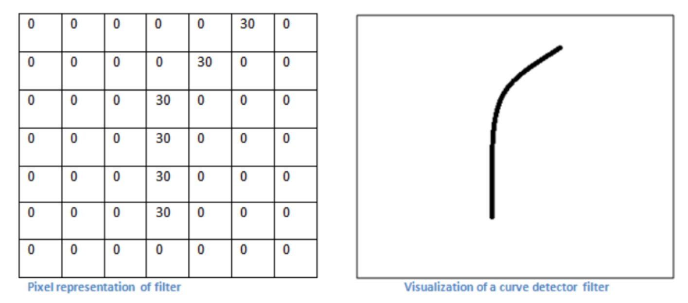

Convolutional Neural Networks
Mihir Patel
December 2017
Introduction
Introduction
Neural networks are a very robust machine learning technique capable of tackling nearly every problem. However, as we get into more complex tasks, the computation time required to train deep networks is simply too great. The best example of this is image classification. We would like to identify a picture as an object, such as a cat, dog, or other animal. However, the average smartphone picture has over 2,000,000 input dimensions given the number of pixels and color channels. Learning the semantic meaning from these pixel values to classify an image is very, very difficult.
Convolutional Layers
The issue with neural networks is they disregard spacial benefits. Two pixels next to each other have more correlation than two pixels on the opposite side of an image. Neural networks must learn this fact, which is a waste of computational power and is very difficult to learn. In order to account for this, we use convolutional layers. Traditional neural network layers are fully connected, meaning every neuron in the first layer has a connection to the second. However, since we know far apart images are uncorrelated, we create a sparsely connected structure that ignores these connections.
One Dimensional Filters

Instead of every neuron in the bottom layer connecting to every neuron in the top layer, only nearby ones are connected. This reduces needless computations. In this case, 15 connections are present. If the network had been fully connected, there would be 35 connections.
Two Dimensional Filters

Images, however, are two dimensional. Previously, we had flattened images into one dimesion such that a 24 x 24 MNIST image was transformed into a 1 x 724 input vector. In convolutional layers, we maintain the 24 x 24 matrix as we want this extra spacial information. In the above image, we can see the top-right neuron in the green layer is dependent on the 3 x 3 region in the top-right of the blue layer.
Shared Weights

The last aspect we introduce to these convolutional layers is the concept of shared weights. The layers are looking for spacial features such as lines or curves. It stands to reason these concepts are generalizable and shouldn’t only occur in specific regions of the image. Therefore, we share weights between the connections and only use one matrix. As we can see in the above image, each value in the layer to the right is generated by looking at a 2x2 region in the layer to the left. They all use the same shared weights which are to the left of the line. These weights are called kernels or filters as they are applied to a spacial region.
Example Kernel

Each kernel learns to identify various patterns. In the first few layers, this consists of simple things like lines and curves. A kernel might look similar to the one above and be able to detect a specific shape. Subsequent layers will learn features of features and kernels will detect combinations of lines and curves which may result in shapes such as squares or circles. Note that when applying the kernel, we multiply element-wise and do not do matrix multiplication. This yields a Hadamard product, which is the matrix version of the dot product.
Multiple Kernels

As we have said that the subsequent layer only uses one kernel across the image, there can only be one feature learned at each layer. To account for this, we create multiple stacked feature maps. As the figure above shows, we generate \(k\) 2-dimensional slices in the subsequent layers where each slice uses a different kernel. This allows for learning multiple features in the convolutional layers (conv1 and conv2). We will discuss the other parts of this image later.
Activation Function
Before we go into the mathematics of convolutional layers, we will firstly discuss the activation functions used. As we know from before:
\[n = \sigma(w_1n_1 + w_2n_2 + b)\]
Previously, we have used the sigmoid activation function:
\[\sigma(x) = \frac{1}{1 + e^{-x}}\]
As we covered in our fourth neural networks lecture on hyper parameters, neural networks suffer from the vanishing gradient problem. To briefly recap, the gradient rapidly approaches 0 as we go deeper into the network as the derivative of the sigmoid is always less than 1. This is because when the delta for subsequent layers is calculated, the derivative of the activation function is multiplied to the values.
\[\delta_i = W_{i+1}^T\delta_{i+1} \odot \sigma'(W_ix_{i-1})\]

To account for this, we use the relu function. As the function is a line with a slope of 1, the derivative of the activation function is 1 and the gradient no longer approaches 0 for deeper layers. This allows us to build far greater networks. The reason the left side of the function is 0 is because it makes it non-linear. Non-linearity allows the network to detect the presence of something. In this function, it either says a feature is not present or it is present and here is the confidence, as given by the sum of the weights and biases. Theoretically, a derivative is not present if x is 0. However, in practice x is never exactly 0 so this is not an issue.
Forward Propagation
Now that we conceptually understand convolutional layers, let’s dig into the mathematics. Given the following input matrix A and kernel, we can calculate the output from a convolution.
\[\begin{bmatrix} 1 & 2 & 3 & 1\\ 4 & 5 & 6 & 1\\ 7 & 8 & 9 & 1\\ \end{bmatrix} * \begin{bmatrix} 2 & 2\\ 2 & 2\\ \end{bmatrix} = \begin{bmatrix} 24 & 32 & 22\\ 48 & 56 & 34\\ \end{bmatrix}\]
The top-left value in the output is obtained by \(1*2 + 4*2 + 2*2 + 5*2\), the top-middle vale by \(2*2 + 5*2 + 3*2 + 9*2\), and so on as we have learned before. In order to calculate this using linear algebra and matrix operations, which we know can be nicely parallelized for deep learning, we must transform the input matrix.
\[A^{'} = \begin{bmatrix} 1 & 4 & 2 & 5 & 3 & 6\\ 4 & 7 & 5 & 8 & 6 & 9\\ 2 & 5 & 3 & 6 & 1 & 1\\ 5 & 8 & 6 & 9 & 1 & 1\\ \end{bmatrix}\] In order to apply the kernel, we first prepare the input information. We pass the kernel size to the matrix and apply a transformation to obtain \(A^{'}\). Each column in this new matrix is associated with the where the kernel will be applied in column order. For example, the first column in \(A^{'}\) corresponds to the 1, 4, 2, 5 in the top-left of \(A\). The second column represents the bottom-right corner. The third column goes one step to the right and back to the top. This is done till each location the kernel will be applied is listed.
\[A^{'T} * \begin{bmatrix} 2\\ 2\\ 2\\ 2\\ \end{bmatrix} = \begin{bmatrix} 24\\ 48\\ 32\\ 56\\ 22\\ 34\\ \end{bmatrix}\] We then take the transpose of this matrix, which is matrix multiplied with the flattened kernel. Note that the transpose is the same as generating \(A^{'}\) with each row being the region the kernel is applied to. This yields the output matrix, which is shaped once more in column order. We can reshape it to obtain the one found in the top of this section. This is then run through the activation function, which yields the same values as everything is positive.
Backpropagation
Backpropagation in convolutional neurla networks is remarkably complex. We will cover a somewhat high-level approach as the true derivations require linear algebra knowledge beyond the extent of TJ courses. From neural networks, we know that \[\frac{\partial E}{\partial W_i} = \delta_i x_{i-1}^T\] where delta is the error propagated to each layer. To propagate deltas, we do: \[\delta_i = W_{i+1}^T\delta_{i+1} \odot \sigma'(W_ix_{i-1})\]
This part remains largely the same, however we modify the activation function to relu and change how we multiply the matrices to the proper linear operations to maintain dimensions. \[\delta_i = W_{i+1}^T\delta_{i+1} \odot f'(W_ix_{i-1})\]
The primary difference arises in how we compute the gradient with respect to the weights in the kernel.
\[\frac{\partial E}{\partial W_1} = rot180(\delta_1) x_0^T\]
The only primary changes are rotations of the kernels and deltas in backpropagation at a high level. The fundamental mathematical changes are considerably more complex and non-trivial. A derivation of this can be found at: https://grzegorzgwardys.wordpress.com/2016/04/22/8/
Hyperparameters
There are certain characteristics of convolutional layers that can be modified to tune performance.
Kernel Size
Changing the kernel size impacts the computational cost in forward and backward propagation and the scale of the features learned. Smaller kernels learn smaller patterns whereas larger kernels are more difficult to train but can extract more spacial information. Typically, odd numbers are used for kernel sizes so that at each step the center is a specific pixel and not the center of a pixel.
Depth
Depth represents the number of kernels per layer and is the equivalent to number of neurons in a standard layer. Typically, the number decreases by half after each subsequent layer as there are less higher-level features that need to be known. If the network is deep enough, the depth is held constant for several layers in a row as continuing to double it after each layer would become impractical and very computationally expensive.
Stride
So far, we have applied a kernel to every possible location it can fit. This has a stride length of 1, as at every step we move the kernel by 1 in a direction. However, it can be the case that two kernel locations may have high enough overlap that calculating both is repetitive. This is especially true for larger kernels. To account for this, we increase the stride length.
\[\begin{bmatrix} 0 & 0 & 0 & 0\\ 0 & 1 & 2 & 0\\ 0 & 4 & 5 & 0\\ 0 & 0 & 0 & 0\\ \end{bmatrix} * \begin{bmatrix} 2 & 2\\ 2 & 2\\ \end{bmatrix} = \begin{bmatrix} 2 & 6 & 4\\ 10 & 24 & 20\\ 8 & 18 & 10\\ \end{bmatrix}\] In the above equation, we apply a 2 x 2 kernel to a 4 x 4 image to obtain a 3 x 3 result. However, if we increase the stride length to 2:
\[\begin{bmatrix} 0 & 0 & 0 & 0\\ 0 & 1 & 2 & 0\\ 0 & 4 & 5 & 0\\ 0 & 0 & 0 & 0\\ \end{bmatrix} * \begin{bmatrix} 2 & 2\\ 2 & 2\\ \end{bmatrix} = \begin{bmatrix} 2 & 4\\ 8 & 10\\ \end{bmatrix}\] This reduces the dimensions of the output matrix.
Zero Padding
A kernel cannot be centered around border pixels, which may lead to it missing certain features. As a result, zero-padding can be used.
\[\begin{bmatrix} 1 & 2\\ 4 & 5\\ \end{bmatrix} * \begin{bmatrix} 2 & 2\\ 2 & 2\\ \end{bmatrix} = \begin{bmatrix} 24\\ \end{bmatrix}\]
With no padding, the kernel can only be applied once. But if we add zeros to the border, we get:
\[\begin{bmatrix} 0 & 0 & 0 & 0\\ 0 & 1 & 2 & 0\\ 0 & 4 & 5 & 0\\ 0 & 0 & 0 & 0\\ \end{bmatrix} * \begin{bmatrix} 2 & 2\\ 2 & 2\\ \end{bmatrix} = \begin{bmatrix} 2 & 6 & 4\\ 10 & 24 & 20\\ 8 & 18 & 10\\ \end{bmatrix}\] This allows us to apply the kernel to the edges. The reason we commonly use kernels with odd dimensions is because the centers become difficult to handle as in the above case, where a 2 x 2 kernel is used.
Pooling Layers
Even with sparse connections, convolutional layers produce a lot of data. If we look for many features, we greatly increase the size of the subsequent hidden layer. However, a lot of this information isn’t very useful. For example, while it is important that a curve is in the top right, its exact pixel location isn’t as important. To remove this extra information, we use pooling layers.
Max Pooling

Pooling layers take the highest value in each region and only track that. This removes the exact pixel location information and actually helps in making the network more generalizable while decreasing data by 1/4. This greatly increases speed while increasing robustness. The most common method for this technique is max pooling. Max pooling takes the size of the pooling region, which is typically 2 x 2, and takes the highest value from that region. The intuition is that each kernel is looking for a shape, so if the value is highest in one part, that is closest to where the shape is present and therefore is the significant value.
Other Pooling Algorithms
There are other methods for calculating the pooled value. One technique is the square root of the sum of the squares of the values. Another is the average of the values. Determining which pooling layer algorithm to use is a tunable hyperparameter though is not very significant. Another hyperparameter is the pooling kernel, which can be changed to any size.
Backpropagation
As pooling reduces the data in forward propagation, we must increase the data when backpropagating. \[\delta_i = upsample(W_{i+1}^T\delta_{i+1}) \odot f'(W_ix_{i-1})\] We modify the backpropagation slightly to upsample the error. This does the inverse of pooling and expands the error to match the pooling kernel.
Putting It All Together

So now we have our full convolutional neural network. We take a raw image, and using kernels, extract out features. We then use pooling to compress the data and repeat, generating features of features, and so on. We then feed all of these features into a fully connected standard neural network to classify an image based on this extracted, higher level information.
Problems
Given the following kernel and input, calculate the output. Do not forget the relu activation function. \[\begin{bmatrix} 4 & 1 & 2 & 4 & 7 & 9\\ 0 & 1 & 2 & 0 & 2 & 3\\ 6 & 4 & 5 & 2 & 1 & 3\\ 8 & 1 & 2 & 1 & 3 & 2\\ \end{bmatrix} * \begin{bmatrix} -1 & 0 & 1\\ -2 & 0 & 2\\ -1 & 0 & 1\\ \end{bmatrix}\]
Given the following kernel and input, calculate the output. Use a stride of 2 and apply zero-padding. \[\begin{bmatrix} 4 & 1 & 2 & 4 & 7 & 9\\ 0 & 1 & 2 & 0 & 2 & 3\\ 6 & 4 & 5 & 2 & 1 & 3\\ 8 & 1 & 2 & 1 & 3 & 2\\ 5 & 8 & 1 & 2 & 0 & 2\\ \end{bmatrix} * \begin{bmatrix} 2 & 1\\ 1 & 2\\ \end{bmatrix}\]
What are the characteristics of stride length? Select all that apply.
Reduced number of computations
Better detection features
Easier to implement
Makes pooling more efficient
What are the benefits of convolutional neural networks over standard networks? Select all that apply.
They self-learn patterns from data through improved backpropagation
They utilize spacial information from data
Given their ability to learn kernels, they perform far better on images
They have more tunable hyperparameters than normal networks, which means they are robust and require less human input